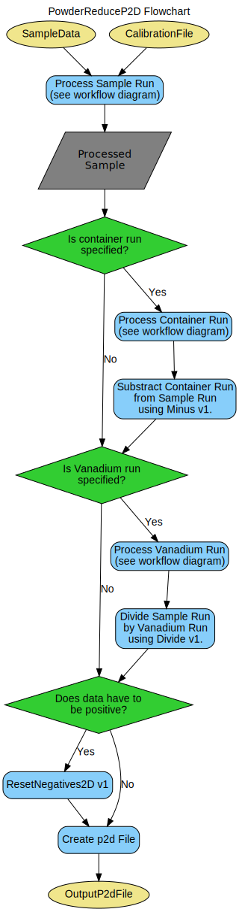
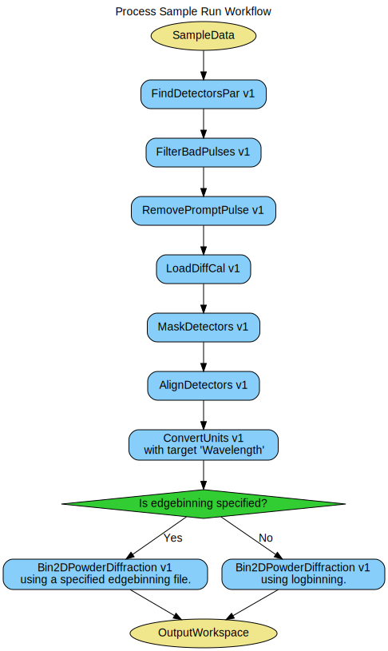
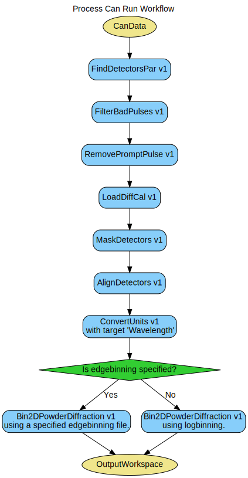
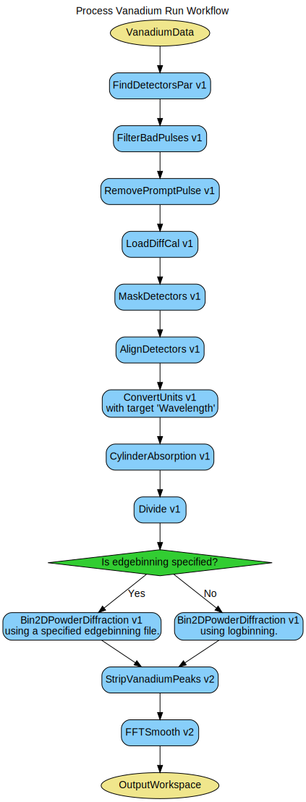

\(\renewcommand\AA{\unicode{x212B}}\)
PowderReduceP2D v1¶
{kind=link}
PowderReduceP2D dialog.¶
Summary¶
The algorithm used to process the results of powder diffraction experiments and create a ‘.p2d’ file for multidimensional Rietveld refinement.
See Also¶
Properties¶
Name |
Direction |
Type |
Default |
Description |
|---|---|---|---|---|
SampleData |
Input |
string |
Datafile that should be used. |
|
DoIntensityCorrection |
Input |
boolean |
False |
If set to True you have to declare a vanadium measurement for intensity correction. |
VanaData |
Input |
string |
Vanadium measurement for intensity correction. |
|
DoBackgroundCorrection |
Input |
boolean |
False |
If set to True you have to declare an empty can measurement for background correction. |
EmptyData |
Input |
string |
Empty measurement of the can for background correction. |
|
CalFile |
Input |
string |
Calibration file. |
|
DoEdgebinning |
Input |
boolean |
False |
If set to True you have to declare a BinEdges file. |
BinEdgesFile |
Input |
string |
BinEdges file used for edgebinning. |
|
OutputFile |
Input |
string |
Mandatory |
Output File for p2d Data. |
SystemTest |
Input |
boolean |
False |
Set to True if running a system test. Greatly decreases the amount of data used. |
TwoThetaMin |
Input |
number |
50 |
Minimum value for 2 Theta. Everything smaller gets removed. |
TwoThetaMax |
Input |
number |
120 |
Maximum value for 2 Theta. Everything bigger gets removed. |
WavelengthCenter |
Input |
number |
0.7 |
Center Wavelength is used to calculate automatic values for lambdaMin and lambdaMax if they are not specified. |
LambdaMin |
Input |
number |
0.3 |
Minimum value for lambda. Everything smaller gets removed. If zero it is not used and values get calculated from center wavelength. |
LambdaMax |
Input |
number |
1.1 |
Maximum value for lambda. Everything bigger gets removed. If zero it is not used and values get calculated from center wavelength. |
DMin |
Input |
number |
0.11 |
Minimum value for d. Everything smaller gets removed. If zero it is not used and values get calculated from 2 theta and lambda. |
DMax |
Input |
number |
1.37 |
Maximum value for d. Everything bigger gets removed. If zero it is not used and values get calculated from 2 theta and lambda. |
DpMin |
Input |
number |
0.48 |
Minimum value for dp. Everything smaller gets removed. If zero it is not used and values get calculated from 2 theta and lambda. |
DpMax |
Input |
number |
1.76 |
Maximum value for dp. Everything bigger gets removed. If zero it is not used and values get calculated from 2 theta and lambda. |
ReturnLinearRanges |
Input |
boolean |
False |
if set to true, the algorithm would return linear detector’s ranges (dx,dy) rather then angular ranges (dAzimuthal,dPolar) |
ParFile |
Input |
string |
not_used.par |
An optional file that contains of the list of angular parameters for the detectors and detectors groups; If specified, will use data from file instead of the data, calculated from the instument description. Allowed extensions: [‘.par’, ‘.phx’] |
OutputParTable |
Input |
string |
Detec |
If not empty, a name of a table workspace which will contain the calculated par or phx values for the detectors. |
LowerCutoff |
Input |
number |
99.998 |
The percentage of the average to use as the lower bound. |
Width |
Input |
number |
150 |
The width of the time of flight (in microseconds) to remove from the data. |
Frequency |
Input |
number |
Optional |
The frequency of the source (in Hz) used to calculate the minimum time of flight to filter. |
WorkspaceName |
Input |
string |
POWTEX |
The base of the output workspace names. Names will have _group, _cal, _mask appended to them. |
InstrumentName |
Input |
string |
Optional: Name of the instrument to base the GroupingWorkspace on which to base the GroupingWorkspace. |
|
InstrumentFilename |
Input |
string |
Optional: Path to the instrument definition file on which to base the GroupingWorkspace. Allowed extensions: [‘.xml’] |
|
MakeGroupingWorkspace |
Input |
boolean |
True |
Set to true to create a GroupingWorkspace with called WorkspaceName_group. |
MakeCalWorkspace |
Input |
boolean |
True |
Set to true to create a CalibrationWorkspace with called WorkspaceName_cal. |
MakeMaskWorkspace |
Input |
boolean |
True |
Set to true to create a MaskWorkspace with called WorkspaceName_mask. |
TofMin |
Input |
number |
0 |
Minimum for TOF axis. Defaults to 0. |
TofMax |
Input |
number |
Optional |
Maximum for TOF axis. Defaults to Unused. |
FixConversionIssues |
Input |
boolean |
True |
Set DIFA and TZERO to zero if there is an error and the pixel is masked |
MaskedWorkspace |
Input |
string |
POWTEX_mask |
If given but not as a SpecialWorkspace2D, the masking from this workspace will be copied. If given as a SpecialWorkspace2D, the masking is read from its Y values. |
SpectraList |
Input |
int list |
A list of spectra to mask |
|
DetectorList |
Input |
int list |
A list of detector ID’s to mask |
|
WorkspaceIndexList |
Input |
unsigned int list |
A list of the workspace indices to mask |
|
ForceInstrumentMasking |
Input |
boolean |
False |
Works when ‘MaskedWorkspace’ is provided and forces to use spectra-detector mapping even in case when number of spectra in ‘Workspace’ and ‘MaskedWorkspace’ are equal |
StartWorkspaceIndex |
Input |
number |
0 |
If other masks fields are provided, it’s the first index of the target workspace to be allowed to be masked from by these masks, if not, its the first index of the target workspace to mask. Default value is 0 if other masking is present or ignored if not. |
EndWorkspaceIndex |
Input |
number |
Optional |
If other masks are provided, it’s the last index of the target workspace allowed to be masked to by these masks, if not, its the last index of the target workspace to mask. Default is number of histograms in target workspace if other masks are present or ignored if not. |
ComponentList |
Input |
str list |
A list names of components to mask |
|
AttenuationXSection |
Input |
number |
5.08 |
The ABSORPTION cross-section, at 1.8 Angstroms, for the sample material in barns. Column 8 of a table generated from http://www.ncnr.nist.gov/resources/n-lengths/. |
ScatteringXSection |
Input |
number |
5.1 |
The (coherent + incoherent) scattering cross-section for the sample material in barns. Column 7 of a table generated from http://www.ncnr.nist.gov/resources/n-lengths/. |
SampleNumberDensity |
Input |
number |
0.07192 |
The number density of the sample in number of atoms per cubic angstrom if not set with SetSampleMaterial. |
CylinderSampleHeight |
Input |
number |
4 |
The height of the cylindrical sample in centimetres. |
CylinderSampleRadius |
Input |
number |
0.4 |
The radius of the cylindrical sample in centimetres. |
NumberOfSlices |
Input |
number |
10 |
The number of slices into which the cylinder is divided for the calculation. |
NumberOfAnnuli |
Input |
number |
10 |
The number of annuli into which each slice is divided for the calculation. |
ScatterFrom |
Input |
string |
Sample |
The component to calculate the absorption for (default: Sample). Allowed values: [‘Sample’, ‘Container’, ‘Environment’] |
NumberOfWavelengthPoints |
Input |
number |
Optional |
The number of wavelength points for which the numerical integral is calculated (default: all points) |
ExpMethod |
Input |
string |
Normal |
Select the method to use to calculate exponentials, normal or a fast approximation (default: Normal). Allowed values: [‘Normal’, ‘FastApprox’] |
EMode |
Input |
string |
Elastic |
The energy mode (default: elastic). Allowed values: [‘Elastic’, ‘Direct’, ‘Indirect’] |
EFixed |
Input |
number |
0 |
The value of the initial or final energy, as appropriate, in meV. Will be taken from the instrument definition file, if available. |
CylinderAxis |
Input |
dbl list |
0,1,0 |
A 3D vector specifying the cylindrical sample’s orientation |
dSpaceBinning |
Input |
dbl list |
A comma separated list of first bin boundary, width, last bin boundary. Optionally this can be followed by a comma and more widths and last boundary pairs. Negative width values indicate logarithmic binning. |
|
dPerpendicularBinning |
Input |
dbl list |
A comma separated list of first bin boundary, width, last bin boundary. Optionally this can be followed by a comma and more widths and last boundary pairs. Negative width values indicate logarithmic binning. |
|
NormalizeByBinArea |
Input |
boolean |
False |
Normalize the binned workspace by the bin area. |
FWHM |
Input |
number |
2 |
The number of points covered, on average, by the fwhm of a peak. Passed through to FindPeaks. Default 7. |
Tolerance |
Input |
number |
2 |
A measure of the strictness desired in meeting the condition on peak candidates. Passed through to FindPeaks. Default 2. |
PeakPositionTolerance |
Input |
number |
0.05 |
Tolerance on the found peaks positions against the input peak positions. A non-positive value turns this option off. |
BackgroundType |
Input |
string |
Quadratic |
The type of background of the histogram. Present choices include Linear and Quadratic. Allowed values: [Linear, Quadratic] |
HighBackground |
Input |
boolean |
True |
Flag to indicate that the peaks are relatively weak comparing to background. |
WorkspaceIndex |
Input |
number |
Optional |
If set, will remove peaks only in the given spectrum of the workspace. Otherwise, all spectra will be searched. |
Filter |
Input |
string |
Butterworth |
The type of the applied filter. Allowed values: [Zeroing, Butterworth] |
Params |
Input |
string |
20,2 |
The filter parameters: For Zeroing, 1 parameter: n - an integer greater than 1 meaning that the Fourier coefficients with frequencies outside the 1/n of the original range will be set to zero. For Butterworth, 2 parameters: n and order, giving the 1/n truncation and the smoothing order. |
IgnoreXBins |
Input |
boolean |
True |
Ignores the requirement that X bins be linear and of the same size. Set this to true if you are using log binning. The output X axis will be the same as the input either way. |
AllSpectra |
Input |
boolean |
True |
Smooth all spectra. |
WorkspaceIndexSmooth |
Input |
number |
0 |
Workspace index for smoothing |
AddMinimum |
Input |
boolean |
True |
If set to True, adds the most negative intensity to all intensities. |
ResetValue |
Input |
number |
0 |
Set negative intensities to the specified value (default=0). |
AddMinimumVana |
Input |
boolean |
True |
If set to True, adds the most negative intensity to all intensities. |
ResetValueVana |
Input |
number |
1 |
Set negative intensities to the specified value (default=1). |
Description¶
Input¶
This algorithm can be used for one run of sample data. For correction and background reduction
additional measurements of Vanadium(VanaData) and an empty can(EmptyData) can be specified
but are not necessary. If an empty measurement is specified, it is substracted from the sample
measurement. If a Vanadium measurement is specified, the sample measurement is divided by the
vanadium measurement. If either or both are not specified these steps are skipped. It is highly
recommended to specify both.
Calibration, Grouping, Masking¶
The calibration is done using the Calibration File(CalFile). Additionally three
implicit workspaces (<instrument>_group, <instrument>_cal, <instrument>_mask) are
created during the algorithms execution if they do not exist already.
Binning¶
The recommended binning (edgebinning) requires an edgebinning file to be specified. If no edgebinning file is specified, logarithmic binning (standard values: x1=-0.008, x2=0.01) is used.
Manipulating data with constants¶
The reduced data are checked for negative intensities. If any are found, they are removed either by adding the most negative valueor by setting the intensity to a specified value. This is done, because negative values cannot be processed in multidimensional Rietveld refinement.
Output¶
The output of this Workflow algorithm is a p2d file. The p2d file contains values for 2Theta and lambda (columns 1 and 2) as well as d and dperp (columns 3 and 4). Column 5 contains the intensity data.
Workflow¶
Usage¶
This is a workflow algorithm to process the results of powder diffraction experiments and create a p2d file for multidimensional Rietveld refinement. The algorithm is currently tested for the Instruments PG3 (POWGEN) and PTXatPG3 (POWTEX detector at POWGEN instrument).
Categories: AlgorithmIndex | Diffraction\Reduction
Source¶
Python: PowderReduceP2D.py